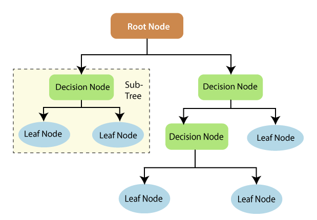
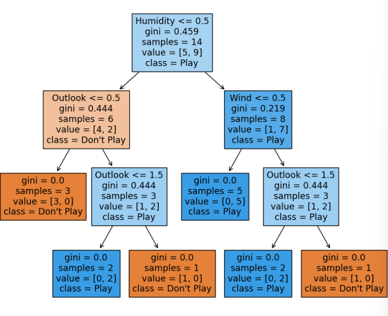

Decision Trees
Introduction to Decision Trees
Decision trees are a popular machine learning algorithm used for both classification and regression tasks. They are essentially flowcharts that represent a series of decisions and their possible outcomes. Each node in the tree represents a test or decision, and each branch represents a possible outcome.
Basic Structure of a Decision Tree
- Root Node: The starting point of a decision tree, representing the entire dataset.
- Leaf Node: The final output of a decision tree, where no further division is possible.
- Splitting: The process of dividing a node into sub-nodes based on specific criteria.
- Branch/Subtree: A smaller decision tree formed by splitting a node.
- Pruning: The process of removing unnecessary branches from a decision tree to simplify it and prevent overfitting.
- Parent/Child Node: The root node is the parent node, and the nodes connected to it are child nodes.
Working Mechanism of Decision Trees
1.Data Preparation
The process begins with a dataset containing features (input variables) and a target variable (what we want to predict). The data is typically split into training and testing sets.
2.Tree Construction
- Root Node: The starting point of a decision tree, representing the entire dataset.
- Attribute Selection: For each node, the algorithm must decide which feature to use for splitting the data. This is done by evaluating all features and choosing the one that results in the best split. The "best" split is determined by a metric such as:
- Information Gain: Measures the reduction in entropy (disorder) after a split.
- Gini Index: Measures the impurity or probability of incorrect classification.
- Chi-square: Measures the independence between the feature and the target variable.
- The algorithm calculates these metrics for each potential split and selects the feature that provides the highest value.
- Splitting: Once the best feature is selected, the data is split into subsets based on the feature's values. For categorical features, each value typically creates a new branch. For continuous features, a threshold is determined to create binary splits.
- Recursive Splitting: Steps b and c are repeated recursively for each newly created node, creating child nodes. This process continues until a stopping criterion is met, such as:
- Maximum tree depth is reached
- Minimum number of samples in a leaf node is reached
- All samples in a node belong to the same class
- Further splitting would not improve the results significantly
3.Pruning (Optional)
After the tree is fully grown, it may be pruned to reduce complexity and prevent overfitting:
- Post-pruning: Remove branches that do not significantly improve prediction accuracy.
- Pre-pruning: Stop growing the tree earlier, before it perfectly fits the training data.
4.Making Predictions
To make a prediction for new data:
- Start at the root node.
- Evaluate the feature/condition at the current node.
- Follow the appropriate branch based on the feature value.
- Repeat steps b and c until reaching a leaf node.
- The prediction is based on the leaf node:
- For classification: Predict the majority class in the leaf.
- For regression: Predict the average value of samples in the leaf.
5.Handling Missing Values
When encountering missing values, common strategies include:
- Using surrogate splits (secondary features that closely mimic the primary split)
- Sending the sample down all possible branches and averaging the results
- Imputing the missing value before traversing the tree
6.Continuous Updates
In some implementations, decision trees can be updated incrementally as new data becomes available, adjusting split points or growing new branches as needed.
5.Handling Missing Values
While not part of the basic decision tree algorithm, it's worth noting that decision trees are often used in ensemble methods:
- Random Forests: Build multiple trees on random subsets of data and features, then aggregate their predictions.
- Gradient Boosting: Sequentially build trees, with each new tree focusing on correcting the errors of the previous ones.
Advantages of Decision Trees
- Easy to understand and interpret: Decision trees are visually appealing and can be easily understood by non-technical people.
- Can handle both numerical and categorical data: Decision trees can work with different types of data.
- No need for feature scaling: Unlike some other algorithms, decision trees do not require feature scaling.
- Efficient for large datasets: Decision trees can be relatively efficient for large datasets.
Disadvantages of Decision Trees
- Prone to overfitting: Decision trees can easily overfit the training data, especially for complex datasets.
- Sensitive to small changes in data: Small changes in the data can lead to significant changes in the decision tree.
- May not perform well for continuous variables: Decision trees can struggle with continuous variables, especially if they have many distinct values.
Sample Code Example
Decision Tree in Action: Implementing a Weather-Based Tennis Play Predictor using scikit-learn :
# Import necessary libraries
from sklearn import tree
import pandas as pd
import numpy as np
# Define the dataset
# Features: [Outlook, Temperature, Humidity, Wind]
# Outlook: 0=Sunny, 1=Overcast, 2=Rain
# Temperature: 0=Hot, 1=Mild, 2=Cool
# Humidity: 0=High, 1=Normal
# Wind: 0=Weak, 1=Strong
features = np.array([
[0, 0, 0, 0], # Sunny, Hot, High Humidity, Weak Wind
[0, 0, 0, 1], # Sunny, Hot, High Humidity, Strong Wind
[1, 0, 0, 0], # Overcast, Hot, High Humidity, Weak Wind
...
])
# Labels: 0=Don't Play, 1=Play
labels = np.array([0, 0, 1, 1, 1, 0, 1, 0, 1, 1, 1, 1, 1, 0])
# Create a Decision Tree Classifier
clf = tree.DecisionTreeClassifier()
# Train the classifier (fit the model)
clf = clf.fit(features, labels)
# Test prediction
# Predict whether to play tennis or not based on new conditions
# Test Case: Sunny, Cool, High Humidity, Strong Wind -> [0, 2, 0, 1]
prediction = clf.predict([[0, 2, 0, 1]])
print("Predicted result:", "Play Tennis" if prediction[0] == 1 else "Don't Play Tennis")
# Plot the decision tree
import matplotlib.pyplot as plt
fig = plt.figure(figsize=(10,8))
_ = tree.plot_tree(clf,
feature_names=['Outlook', 'Temperature', 'Humidity', 'Wind'],
class_names=['Don\'t Play', 'Play'],
filled=True)
plt.show()
Output:
